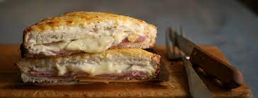

Croque-Monsieur

Description
Toute personne aimant cuisiner a aussi ses moments de flemme.
C'est dans ces moments là que les plats simples sont les plus appréciables, et le croque-monsieur ne déroge
pas à la règle !
Ingredients
- Pain de mie
- Jambon
- Crème fraiche
- Fromage rapé
Steps
- Etaler de la crème sur les tranches de pain de mie.
- Ajouter une tranche de jambon
- Ajouter le fromage rapé.
- Cuire au four jusqu'à la cuisson désirée.
- Dégustez!